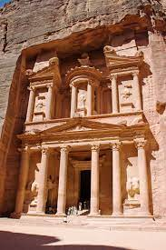

Petra originally known to its inhabitants as is a historic and archaeological city in southern Jordan. Famous for its rock-cut architecture and water conduit system,Petra is also called the "Rose City" because of the colour of the stone from which it is carved;[5] it was famously called a rose-red city half as old as time" in a poem of 1845 by John Burgon
